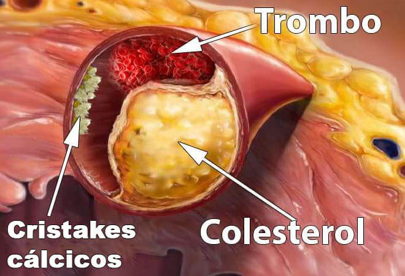

Después de limpiar los vasos sanguíneos, ¡la presión arterial alta dejará de
preocuparnos! Desaparecerá junto con otros 9 síntomas de dolencias "incurables".
Todo el mundo sabe que la presión, el derrame cerebrovascular y el infarto son
una consecuencia de los vasos «contaminados» con colesterol. Enfermedades
cardiovasculares. Sin embargo, pocos saben que esto es solo la punta del
iceberg. Los vasos «sucios» son los culpables de 9 de cada 10 enfermedades
crónicas que se consideran incurables.
Duele la cabeza, salta la presión. Dolores y crujidos en las articulaciones, el
cuello no gira y no se dobla la espalda. Por la noche, las piernas se hinchan y
por la mañana se hincha la cara. Zumbido en los oídos. Dedos entumecidos y
extremidades frías. La vista empeora. La memoria se deteriora. No hay fuerza
para nada. Muchos dirán que es la vejez. Pero no lo es.
Nuestro reportero pudo entrevistar a un experto en salud vascular, Luis Santiago,
quien nos explicó su método de limpieza de los vasos sanguíneos para prolongar la
vida.
Luis Santiago es muy conocido en la comunidad de expertos. A menudo es contratado
como experto en salud vascular, ayudando con productos naturales para problemas de
presión arterial alta. Entre los que recibieron ayuda de Luis Santiago, fueron
ciudadanos corrientes como celebridades.
El Sr. Suárez es capaz de explicar en palabras sencillas los complejos procesos que
ocurren en el cuerpo. Escribió 47 libros de divulgación científica y libros de texto
para personas sin educación especial. Está absolutamente convencido de que nuestros
vasos crean el 90% de la salud de nuestro cuerpo y que nuestro bienestar depende de
su limpieza.
¿¿Por qué los vasos limpios comprenden el 90% de tu bienestar?
Señor Luis Santiago, usted dice que los vasos limpios son el 90% de toda la salud del cuerpo.
¿Por qué?
¿Cuál es el órgano más grande en el cuerpo humano? Pocas personas lo saben. Incluso los
estudiantes de medicina a menudo se equivocan. Suelen decir el cerebro y el hígado. Los
más educados dicen que es la piel. Pero en realidad el órgano más grande es nuestro
sistema vascular.
2.5 veces
es posible dar la vuelta al planeta con los vasos de una sola persona
Imagina. Si extendemos todos los vasos del cuerpo humano y los unimos en un hilo
largo, la longitud de este hilo será aproximadamente
100 000 kilómetros.
Para ser más claro, la longitud del ecuador de la tierra es de 40 000
kilómetros. Resulta que el "hilo" de los vasos de solo una persona puede dar la
vuelta todo el planeta 2.5 veces.
¿Qué le parece esa escala?
Los vasos no son solo unos tubos a través de los cuales fluye la sangre.
Este es un órgano complejo y único, un fallo en él inmediatamente desemboca en una
enfermedad.
Vasos en mal estado en las piernas – varices, edema persistente y pesadez
eterna en las piernas, congelación o ardor insoportable en los pies. Grietas en los
talones. Mala circulación, no hay protección contra las bacterias, de donde viene el
hongo. Las uñas se hacen más rígidas y crecen por dentro de los dedos.
Vasos que alimentan el hígado obstruidos –
hepatosis. Amargura en la boca. Si se come algo un poco grasoso, produce un eructo
amargo.
Vasos en las articulaciones débiles y contaminados -
el cartílago se seca. Las articulaciones crujen y duelen, aparece la osteocondrosis,
salen hernias.
Los vasos del recto pierden el tono – aparecen hemorroides.
Los vasos oculares – lla vista empeora, aparecen manchas en la vista. Se
desarrollan cataratas. El enrojecimiento de los ojos, que a menudo atribuimos al
cansancio, es en realidad micro-hemorragias, o sea los desgarros de los capilares
oculares más pequeños.
La circulación cerebral empeora – mareos, tinnitus y falta de memoria.
Por ejemplo, vas a la cocina, y una vez que has llegado, ya has olvidado para qué. O una
palabra bien conocida está en la punta de tu lengua, pero no puedes recordarla. Todos
estos son signos de deterioro de los vasos sanguíneos del cerebro.
Y, por supuesto, la reina de los vasos en mal estado, su majestad la
Hipertensión. La hipertensión es la madre de los derrames cerebrovasculares y su hermana
el infarto.
Los vasos son nuestro sistema de alimentación, la vida misma se mueve a través de los
vasos. Si se bloquea una parte importante de esta pista, la vida se detendrá.
Los vasos obstruidos son la gazuza para todos los órganos.
El sobrepeso, por ejemplo, está directamente relacionado con los vasos. Los vasos
obstruidos por colesterol hacen que los órganos carezcan de alimento, porque no son
capaces de entregarles la cantidad suficiente de nutrientes. Por lo tanto, el cerebro
envía señales que hay que comer. Y la persona come. Pero los órganos no reciben
nutrición debido a los vasos sucios. El cerebro de nuevo exige que hay que comer. Y así
sucesivamente.
De ahí viene el deseo constante de masticar algo, los antojos de dulces y grasas, el
cuerpo necesita calorías.
Cuando mis compañeros les dicen a sus pacientes: «Tienes hipertensión porque tienes
sobrepeso», confunden causa y efecto. No es la hipertensión la que causa el sobrepeso.
Es el sobrepeso que causa la hipertensión.
El famoso dicho «Si hay salud, hay todo» puede continuar: «Pero la salud es
imposible sin los vasos limpios»
Así que no me cansaré de repetir: si quiere vivir una vida plena, entonces limpie y
restaure los vasos. Los vasos limpios son
la clave para deshacerse los síntomas del 90% de las enfermedades crónicas,
algunas de las cuales se consideran incurables.
¿Con qué más se contaminan los vasos además del colesterol?
Todo el mundo sabe que el colesterol es malo. Es este quien obstruye nuestros vasos
sanguíneos, los estrecha e interrumpe la circulación sanguínea. Pero no es el único
culpable, ¿verdad?
2,6 millones de muertes por año
- exactamente esta cantidad de personas en el mundo mueren por año por niveles
altos de colesterol.

Colesterol
Sí, tiene usted razón. Las placas de colesterol o las "placas
ateroscleróticas" representan aproximadamente el 65-70% de la contaminación vascular.
A la edad de 50 años, se acumulan tantas placas de colesterol en los
vasos sanguíneos de una persona que estrechan los vasos dos veces.
Imagínese. Si el lumen del vaso normal es su dedo, las placas de colesterol
reducen el lumen al tamaño de 4 cerillas.
Las placas de colesterol en sí mismas no representan una amenaza para la vida. Sí, la
calidad de vida disminuye, la presión aumenta, hay dolores de cabeza y en las
articulaciones, debilidad y apatía. Mucho más peligrosa es la masa trombótica, que
también se acumula en nuestros vasos.
Masa trombótica
El peligro de los trombos es que son inestables. En cualquier momento, un trombo
(coágulo de sangre) puede desprenderse y viajar a través de sus vasos en busca de una
víctima.
Si el trombo es lo suficientemente grande, entonces sella herméticamente los vasos de la
víctima. Se presenta la isquemia, o sea la interrupción completa del suministro de
sangre al órgano que se alimenta a través de este vaso.
Derrame cerebrovascular isquémico es el bloqueo de un vaso cerebral. Infarto es el
bloqueo de la arteria cardíaca. Isquemia hepática, colapso pulmonar, falla renal. Las
hemorroides no son más que isquemia vascular rectal. El bloqueo incluso de los pequeños
vasos de las piernas, con el tiempo conduce a la necrosis – gangrena.
Cal de calcio
La cal del calcio en los vasos es un residuo de medicamentos químicos y suplementos
dietéticos. Como regla general, se acumula en los vasos del cerebro. Cualquier factor
(estrés, ejercicio, clima) puede dañar el vaso por los cristales de calcio.
La mayor cantidad de cal se acumula en los vasos cerebrales.
El peligro de la cal de calcio es que tiene una estructura afilada y cristalina. Con un
estrechamiento agudo, un espasmo del vaso causado por el estrés o el esfuerzo físico o
el clima, un cristal de cal afilado puede perforar el vaso y hacer que se rompa. Y la
ruptura de un vaso cerebral es un accidente cerebrovascular hemorrágico.
4 signos claros y los 7 ocultos de los vasos malos
¿Qué síntomas dicen que mis vasos están contaminados? ¿Cómo entender que el cuerpo nos
exige limpiar los vasos lo más pronto posible?
Francamente, si tienes más de 45 años y nunca has tomado nutracéuticos para
limpiar los vasos, te garantizo que tienes problemas con los vasos.
45 años
son esa frontera después de la cual es necesario limpiar los vasos
La obstrucción de los vasos sanguíneos con colesterol, coágulos de sangre, calcificación
es esencialmente un proceso natural relacionado con la edad. Por supuesto, la comida
moderna, los medicamentos, el tabaquismo y el alcohol aceleran el proceso de
contaminación en 5-8 veces. Pero todos somos humanos y no podemos escapar de esto.
El principal signo de los vasos contaminados
Si tiene un diagnóstico de Hipertensión, eso es suficiente. La hipertensión
es la reina de los vasos malos.
¿Sufre de saltos de presión? ¿Siempre es alta y tiene que tomar medicamentos? Así que de
los vasos queda el 30% de lumen. El resto está densamente cubierto con placas de
colesterol, coágulos de sangre, y con cal de calcio.
Por lo tanto, el más mínimo estrés, el cambio en el clima, la tormenta magnética se
reflejan instantáneamente en el bienestar. Salta la presión, la cabeza comienza a doler
mucho, las articulaciones se crujen.
Cuatro enfermedades causadas por los vasos malos:
- 1. Hipertensión La presión inestable o siempre alta, que tiene que ser disminuida con
medicamentos. El indicador principal. ¿Tiene la hipertensión diagnosticada? ¡Los vasos exigen
limpiarlos!»
-
2. Varices
Las venas abultadas en las piernas, pesadez y dolor, hinchazón. La suciedad del colesterol y los
coágulos de sangre atascan las válvulas venosas. Poco a poco aparecen asteriscos vasculares, que
luego se convierten en una red vascular. Y esa ya se está desarrollando en varices.
-
3. Hemorroides
Cuando los vasos rectales que drenan la sangre se obstruyen, los ganglios hemorroidales se
inflaman. Si los vasos sanguíneos que conducen la sangre se obstruyen primero, aparecen fisuras
anales.
-
4. Osteocondrosis
Es una falta de circulación en el cartílago. Los cartílagos se endurecen y comienzan a
desaparecer, sin tiempo para recuperarse. No se renuevan y se encogen. Pierden la capacidad de
amortiguar suavemente. Las sales comienzan a crecer incontrolablemente, formando una joroba.
7 síntomas insinuantes:
-
1. Edema
Los vasos sucios no tienen tiempo para bombear líquido. Se altera el metabolismo del agua y la
sal. Por la noche, los pies se hinchan hasta que los calcetines se hundan en los tobillos dejando
abolladuras. Cara hinchada y bolsas debajo de los ojos. Dedos no dejan quitar los anillos. Un
estómago hinchado habla de hinchazón de los órganos internos.
-
2. Tinnitus
De un fino chirrido apenas audible a un aullido fuerte y un zumbido que interfiere con el enfoque.
Es una consecuencia del aumento de la tensión de los vasos cerebrales que ejercen presión sobre
los tímpanos.
- 3. Vértigo La cabeza borracha, los ataques bruscos y repentinos de vértigo indican que su
aparato vestibular está pasando hambre. A menudo, también sufre el oído.
-
4. Insomnio
¿Se siente somnoliento y letárgico, mientras se va a la cama sin poder dormirse? Esto se debe
a la falta de suministro de sangre a la glándula pituitaria. Deja de producir melatonina, la
hormona del sueño.
-
5. Quebrantamiento
Ausencia de fuerzas. No quiere hacer nada. Solo quiere estar acostado y comer. Este sentimiento
surge porque el cuerpo entra en modo de ahorro de energía. Los órganos no reciben una nutrición
adecuada en los vasos sucios y, para no morir, su cuerpo busca reducir la actividad tanto como sea
posible.
- 6. Anomalías visuales Moscas, ondas, neblina en los ojos. Estos son síntomas de
insuficiencia vascular ocular
-
7. Dolor en las articulaciones
Dependiente del clima, las articulaciones se tuercen. Al despertarse por la mañana, no se siente
despierto y descansado, sino un discapacitado semiparalizado. Tiene que caminar por un tiempo y
amasar las articulaciones endurecidas después del sueño. Es que el líquido sinovial pierde sus
propiedades, pega las articulaciones como una masa tirante.
¿Tiene al menos una señal? Los vasos exigen limpiarlos y nutrir.
La mayoría de las veces, las personas tienen varios signos a la vez en varias
combinaciones. A veces, todos esos signos.
Los infelices intentan tratar cada enfermedad individualmente. Se toman pastillas para
la presión, usan ungüentos para las venas varicosas, se ponen velas para las
hemorroides, y aplican geles para la osteocondrosis. Y por supuesto usan un montón de
analgésicos...
Es que al final tiran todo su dinero en el horno de farmacias. Es que la causa de
todas las enfermedades es una obstrucción vascular.
Hay que empezar por ella, con la limpieza general de los vasos.
¡En 29 años, el número de personas con hipertensión se ha duplicado!
700
600
500
400
300
200
100
0
millones
- de mujeres
- de hombres
Según The Lancet: Worldwide trends in hypertension prevalence and progress in treatment
and control from 1990 to 2019
¿Cómo limpiar los vasos sanguíneos de colesterol, coágulos de sangre y cal?
Vamos a ver un ejemplo de una tal Verónica Aguirre de la Ciudad de México. Tiene 57 años de edad, está
casada, tiene sobrepeso, hipertensión y varices. Su cuerpo reacciona al clima con la
precisión del barómetro: las articulaciones duelen, aparecen la debilidad y la
somnolencia, tiene dolores de cabeza.
¿Cómo se puede ayudar a Amalia? ¿Con qué puede limpiar los vasos sin ir a los médicos y
sin escuchar la moraleja de haber debido perder peso haciendo ejercicio y comiendo bien?
La mayoría de los medicamentos de farmacia no tratan y ni siquiera ayudan, sino
que causan dependencia
Sí, nuestra remedio, desafortunadamente, cojea de ambas piernas. Por lo
tanto, entiendo perfectamente la renuencia a consultar a los médicos. Pero Verónica Aguirre
lo hará bien sola.
Para la limpieza segura de vasos, puedo recomendar una
herramienta con una reputación impecable, el nutracéutico .
ayuda a prolongar la vida de 11 a 17 años, llenándote de energía y ligereza, y
sin pérdida de vitalidad.
Es más seguro que la infusión. Y en términos de eficiencia ocupa el segundo
lugar
después de la limpieza quirúrgica de vasos sanguíneos. Pero, a diferencia de la cirugía,
no tiene complicaciones ni efectos secundarios. En un curso ayuda a limpiar todos los
vasos sanguíneos del cuerpo. Desde grandes arterias gruesas hasta pequeños capilares
delgados.
es una mezcla capsular de extractos de plantas
que, en contacto con el agua, despierta
moléculas vivas. Estos limpiadores barren
el
moco de colesterol de los vasos, los coágulos de sangre pegados a las paredes (placas de
calcio), los restos de medicamentos. Cualquier cosa que interfiera con el flujo libre de
sangre.
La suciedad que se ha acumulado durante años, envenenando su vida es lavada
por en 1,5 - 2 meses de admisión regular.
¡Durante un mes y medio, ayuda a disolver las placas de colesterol, los
coágulos sanguíneos y los cristales de calcio que se han acumulado en los vasos
sanguíneos durante años!
Junto con ellos, se disuelven los dolores de cabeza y el tinnitus se disipa. El cerebro,
que recibe una nutrición completa a través de vasos limpios, funciona a la velocidad de
una supercomputadora. Los pensamientos se hacen claros.
Los sentimientos se agudizan, se escuchan sonidos agradables. Mejora
la audición, puede analizar incluso una conversación tranquila en la habitación de al
lado.
Los olores se vuelven placenteros. Desaparecen la congestión nasal, secreción
nasal crónica, alergias. Los bronquios se abren. La respiración es suave y libre. El
aire fresco, llenando los pulmones, se extiende por el cuerpo con ondas agradables,
causando una sensación de euforia leve.
Los sabores se vuelven brillantes y saturados. La comida habitual es
un placer inusual. Comes menos. Desaparece el deseo constante de dulce y grasa.
Las articulaciones cantan a coro «muchas gracias», dejando de doler. El crujido
desaparece por completo, en su lugar viene la suavidad de los movimientos, gracias a la
actualización de la lubricación articular. Es como si el motor cambiara el aceite,
reemplazara la grasa negra y sucia con virutas de metal por un aceite fresco y
transparente que proporcionara un deslizamiento perfecto.
Esto es impresionante. Para ser honesto, esta es la primera vez que escucho sobre
. He oído hablar de nutracéuticos en general. En Japón e Israel, estos productos
se han utilizado ampliamente durante mucho tiempo y son recomendados por especialistas.
En nuestro país, estos productos siguen siendo tratados con desconfianza.
Nuestra Verónica Aguirre probablemente probó cientos de diferentes suplementos y pastillas,
pero se decidió a no tirar más dinero para dudosos medios milagrosos.
Nuestras dudas son traidoras, nos hacen perder mucho de lo que podríamos lograr
por temor a intentar hacerlo.
Déjeme contarle una historia instructiva sobre la desconfianza.
En 1928, se inventó el primer antibiótico, la penicilina.
Curaba con facilidad la disentería y el tifus, de los cuales, en aquel momento, la gente
se moría.
Pero la mayoría de la gente no creía que pudiera ayudar porque ya se había quemado 1000
veces en intentos de curarse. Aquellos que se quemaron 1000 veces y no tuvieron miedo de
intentarlo en la 1001 vez se curaron. Y los que se rindieron, murieron, aunque la
salvación estaba justo frente a sus narices.
Como una vez, la penicilina derrotó a las enfermedades predominantes en ese momento:
disentería, tifus, peste neumónica. Por lo tanto, con el tiempo,
ayudará a eliminar la presión arterial alta y sus consecuencias. Ya se
están dando los primeros pasos (Japón, Canadá, Corea, Suiza e Israel) para popularizar
este método de limpieza vascular.
En nuestro país, los farmacéuticos no tienen prisa por vender
.
¡Y con esto, pueden causar un daño irreparable a decenas de miles de nuestros
compatriotas!
Yo también creo que las dudas son nuestro peor enemigo, así que no tengo
miedo de probar cosas nuevas.
Imaginemos que compro ... ¿Qué pasa después? ¿Cómo funciona ?
es un tesoro de extractos curativos raros que
funcionan juntos en la pureza y la fuerza de los vasos.
La remolacha ayuda a mejorar el metabolismo, normalizar la función renal y
hepática. Además, ayuda a limpiar y diluir la sangre. Esto minimiza los riesgos de
desarrollar diversas patologías del sistema cardiovascular.
Ayuda a restablecer el suministro de sangre a la piel: desaparecen los vasos
y las estrellas. Las varices disminuyen gradualmente, las hemorroides se secan.
El magnesio es un regulador del cuerpo vascular, la presión arterial y la
circulación tónica. Es un cofactor importante tanto para la asimilación como para
garantizar el nivel óptimo de linfoma intracelular. El magnesio solo puede tener un
efecto positivo en la reducción de la presión arterial.
mata dos pájaros de un tiro: ayuda a eliminar la suciedad de colesterol de los
vasos sanguíneos y promueve la quema de grasa adecuada. A partir de esto, puede sentir
una gran oleada de energía, quiere estar en movimiento, sus ojos se iluminan, aparece
una sensación agradable y mucha fuerza.
La vitamina B3 participa activamente en las propiedades rédox. Es responsable de
la respiración celular, el metabolismo de carbohidratos, proteínas y grasas. Favorece la
eliminación de toxinas de los pulmones. Ayuda a reducir el impacto de factores negativos
en las células del sistema nervioso.
Ajo contiene compuestos azufrados, como la alicina, que pueden ayudar a aumentar el flujo
sanguíneo y a relajar los vasos sanguíneos.
Efecto Mariposa
es como el aleteo del ala de una mariposa, lo que provoca una reacción en cadena
de cambios impresionantes. Comenzando con la limpieza de los vasos de la suciedad
acumulada durante décadas, paso a paso, desencadena una reacción de recuperación
del cuerpo.
2 meses del curso de es como un renacimiento
Un ligero despertar
Se levanta por la mañana fácilmente de la cama, no necesita forzase,
amasando y frotando las piernas, crujiendo la espalda y el cuello.
Desde la mañana, el cuerpo se llena de energía y fuerza, porque los vasos están
completamente limpios y durante la noche todos los órganos recibieron una buena
nutrición y descanso. Ninguna parte del cuerpo murió de hambre por la falta de
suministro de sangre, ganando fuerza para un nuevo día.
Delicioso desayuno
Para el desayuno, se come un sándwich con una gruesa capa de mantequilla y crujientes, y
el hígado y el estómago los toman con facilidad. No más eructos amargos, dolor de
estómago punzante. ayudó a abrir los vasos que alimentan el estómago, ahora
incluso digiere la uña.
Grandes fuerzas
Al salir de la casa ya no tiene que preocuparse por las piernas: caminar a pie no es una
carga, puede caminar al menos todo el día, y las piernas no se cansan y no se hinchan.
Las sandalias, los zapatos, los calcetines no se hunden en los pies hinchados como un
cordel en un palo de salchicha.
Calma absoluta
Estás absolutamente tranquilo y relajado. No más dolor constante que devora la
conciencia sin dejar que se concentre en otra cosa. Cuando nada duele, las cosas
habituales, los sonidos, los olores juegan nuevos colores olvidados.
Alegría envidiable
Incluso después de un duro día de trabajo, llega a casa con una cabeza clara
y ligera. El cerebro funciona como un reloj suizo, no se siente cansado en absoluto.
Un sueño agradable
Y así, cuando se acuesta, se sumerge en un sueño rápido y agradable. Atrás quedaron los
días en que estaba dando vueltas en la cama a medianoche, de vez en cuando volteando la
almohada, y el sueño no llegaba. Ahora todo es fácil - decide cuándo quedarse dormido, y
el cuerpo cumple obedientemente la orden.
Déficit y programa de rebajas
ha desaparecido de la mayoría de las farmacias. ¿Por qué?
Desafortunadamente, sí. Desde principios de este año, ya no se envía
a las farmacias.
La causa del conflicto fue la codicia de las cadenas de farmacias, que exigieron al
fabricante de que les pagara 330 sol por cada unidad de medicamento
vendido. Con el gran margen de beneficio (el costo del curso en algunas
farmacias llegó a 65 sol), los farmacéuticos querían introducir una tarifa
adicional del fabricante.
Los representantes de las farmacias dijeron que tal margen de beneficio les permitiera
sobrevivir. Después de todo, es un producto que se compra 1 una vez cada 7-10
años. Además, después de la limpieza de los vasos con , ¡una persona deja de
necesitar medicamentos que tomaba constantemente! Las personas rechazan los medios para
bajar la presión, dejan de comprar remedios contra el dolor en las articulaciones.
Reducen significativamente el consumo de medicamentos contra el asma y la diabetes. Y
esto conduce a pérdidas de farmacias. Por lo tanto, exigen establecer el precio más alto
posible en .
Como resultado, el fabricante de rompió contratos con todas las farmacias y
ahora se dedica a ventas solo en línea. Sí, es correcto. Piense bien: no es necesario
pagar por el alquiler de lugares comerciales, no hace falta pagar sobornos a las
farmacias para entrar en ellos. Por lo tanto, ahora es mucho más asequible que
cuando se vendía en farmacias.
Programa de rebajas (OFERTAS) «Vasos limpios»
El centro de investigación y el fabricante de han lanzado un programa de
descuentos como parte de un proyecto especial.
Los residentes de las regiones participantes en este programa puede
solicitar en
este programa pueden solicitar.
¿Qué se necesita hacer para entrar en el programa?
Más detalles sobre cómo obtener con hasta un 50% de descuento y
conseguir con
envío a todo el país:
¡ no se vende en farmacias! Por lo tanto, todos aquellos que deseen obtener
con un descuento de hasta el 50% pueden participar en nuestro sorteo.
Después de eso, nuestros especialistas se comunicarán con ellos para desarrollar un
plan individual para recibir "". No importa dónde viva, podemos realizar
envíos a cualquier parte del país.El envío es por mensajería urgente directamente a
vuestro domicilio.
Hemos lanzado una campaña publicitaria a gran escala en todos los medios de
comunicación para llamar la atención de las personas sobre este producto y
prometimos sortear 200 envases de el
Todos pueden participar en este sorteo y llevarse el premio principal: ¡un 50% de
descuento!
Esta promoción tiene como objetivo llamar la atención de la gente sobre este
producto.
¿Cuánto tiempo durará el programa de rebajas?
Hasta el
inclusive o hasta que se entregue la última unidad de . Y todo esto a pesar de la
ausencia de
publicidad en la radio y la televisión. La gente transmite información, lo recomienda a
familiares y
amigos. Fue una
sorpresa para nosotros que la información sobre el programa preferencial comenzara a
divulgarse tan
rápidamente.
Por lo tanto, aconsejamos pedir lo antes posible. El remedio tomado con unas
pausas largas no será efectivo.
*solo para uso interno
*lea las instrucciones de suministro


Discusión